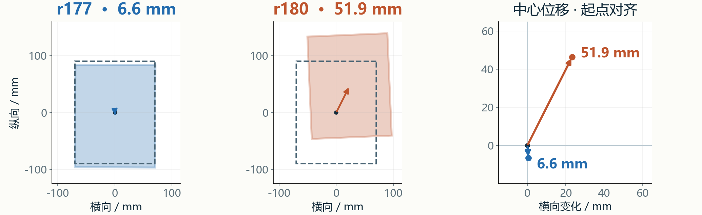
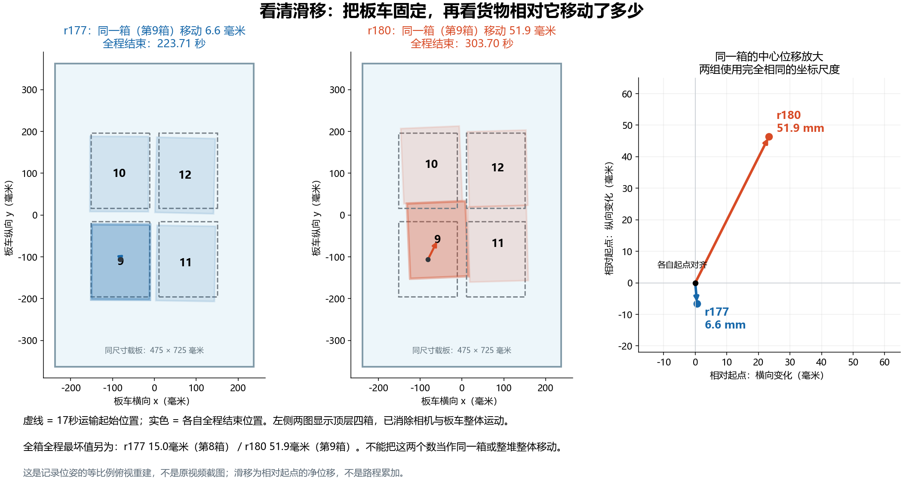
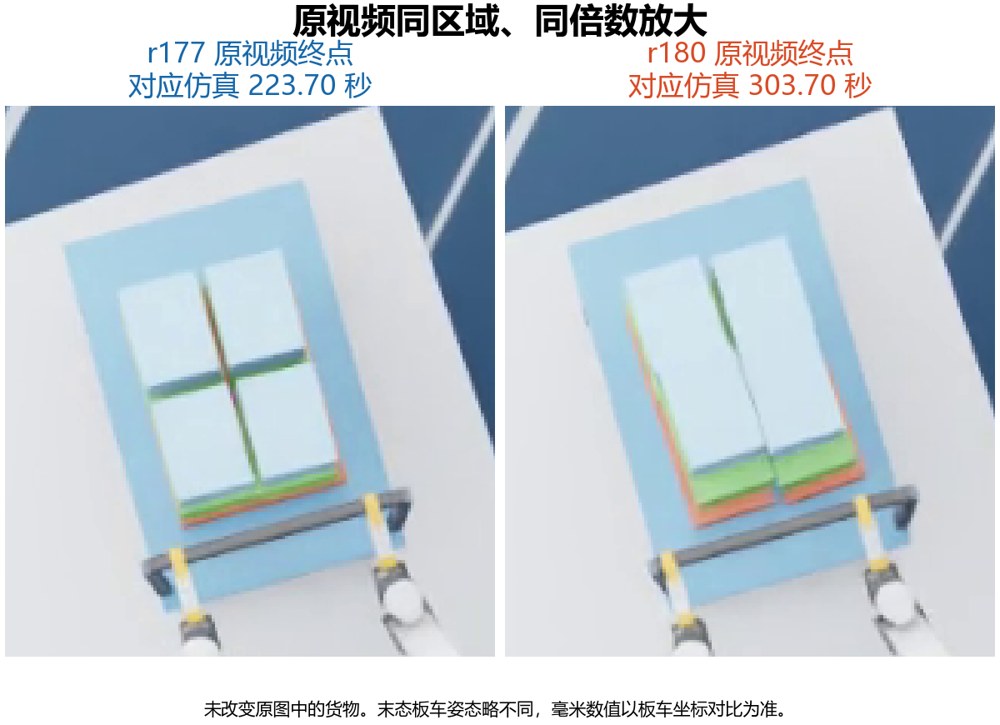

Keep It Upright 原文 PDF · 作者与版本来源
以下为 r177、r180、r198 三版本展示。工程适配不等于论文完整复现，完成运输不等于安全通过。
r177：先把车推到终点。r180：再试着预判颠簸。r198：让底盘、板车和双臂一起规划并跑完全程。
这三个版本都有本场景的全程记录，但解决的重点不同。r198 是后来跑通的 MPAC 启发适配版；它把整组运动规划接通了，货物滑移仍没有优于 r177。
正文讲意思，公式、参数与源码放在折叠区，需要时再展开。这里只讲这三个归档版本。看 r177 · 看 r180 · 看 r198 · 看结果和视频 · 看具体不足
| 关心的问题 | r177 · 路径跟踪 | r180 · 载荷物理预测 | r198 · MPAC 启发适配 |
|---|---|---|---|
| 怎么决定动作 | 在线找路，急弯降低参考速度，按偏差纠正 | 试算 25 组速度和转向，比较未来 1.5 秒的运动与受力 | 沿在线搜索出的整组路径，同时优化未来 5 秒的底盘、双臂与升降动作 |
| 管不管推车 | 管。底盘推，双臂和升降随地形调整 | 沿用推车接口，换成物理预测选动作 | 管。底盘带动整组转弯，预测板车运动，同时保持双手与把手的关系 |
| 货物如何参与 | 记录载荷，但没有用质量和重心选速度、转向 | 总质量、重心、惯量参与受力计算；预测时箱子不相对滑动 | 仿真中有自由堆叠货物，但没有把载荷受力和颠簸代价加入这版优化 |
| 路线从哪里来 | 根据相机观测地图在线找路 | 沿用这部分，不读取 r177 的历史路线或速度 | 复用 r177 的搜索方法，在本轮观测地图上重新找路；不是回放 r177 路线 |
| 实际结果 | 完成全程，仍有滑移 | 完成全程，但更慢、滑移更大 | 完成全程，仍有调整动作，滑移也较大 |
| 能否预测哪箱散落 | 不能 | 不能；只预测整体运动与部分受力量 | 不能；重点是运动配合与几何避障 |
三版都实际在推有货的板车。区别在于有没有根据货物受力改变动作，以及有没有把底盘、双臂和升降放在同一段规划里。r198 不是把 r180 的所有物理功能继续叠加上去。
版本更正：此前展示的 r189 是未完成的局部试验；这里已换成你记得的全程版本 r198。r189 原始记录仍保留在历史报告中。
提前知道：目的地、机器人与板车尺寸、把手位置、机械结构。r180 另外使用装载时的质量、重心、惯量和名义接触参数。
边走边获得：相机当前看见的地形深度、自身位置和速度、各关节的位置。通过这些信息估计板车与机器人现在的相对关系。
发出动作：r177、r180 先决定前后速度和转向，再由执行层配合双臂与升降。r198 则在同一段预测里，联合求出底盘速度、双臂关节目标和升降目标。
像素取中心位置 u=x+0.5、v=y+0.5；fx、fy 是焦距像素值，cx、cy 是主点。点云经相机到世界的刚体变换后用于栅格更新和局部地形拟合。
以上是 r177 / r180 的估计近似，依赖把手与夹爪相对关系保持固定。r198 的规划另按“夹持点与圆管轴线”约束，见下方专节。发生相对转动或柔性变形时，估计可能偏移；它不是独立测量到的板车真值。自身里程计/IMU接口也未覆盖完整实机噪声。
两组运行都保留了头部扫描，相机固定在头部，随头部运动。头部扫描代码、相机配置和运行模块的对应哈希一致。不能把“相机本体固定”说成“整个视角固定”，也不能仅凭这两次运行推断扫描是滑移增大的主因。
先找能走的路。把已经看到的地面拼成局部地图，尝试不同的前进、后退和转弯动作，检查车体是否碰到障碍、轮下是否有支撑。
再沿着路走。看前面弯得急不急、还剩多远、自己偏了多少。急弯会主动降低参考速度，同时修正方向。
最后让机构配合。底盘按左右轮速度差转向；双臂与升降根据局部地形调整把手位置，使机器人继续推住板车。
它已经具备“看到新地形后重新规划”的结构。不过，换成重载、偏载时，它不会因为计算到不同的载荷受力而自动选择另一种推法。
每段前进或后退 0.16 m，分成 4 个样本；曲率候选为 −2、−1.25、−0.6、0、0.6、1.25、2 m⁻¹。搜索最多 3500 节点，启发项权重 1.35。它是有预算限制的在线搜索，不保证全局最优。
取附近路径点和约 3 个样本后的目标点，由航向变化估计曲率。先计算这里的 v_ref、ω_ref，再使用自身实测速度反馈：
所以 0.065/|κ| 是基础参考速度的曲率约束，不应描述成每时刻实际速度都严格满足这个值。0.065 和 ±0.09 是该版本的工程设置；没有厂家额定值或能力标定来证明它们就是实际机器人极限。
控制决策名义每 0.2 仿真秒一次，路径约每 2 秒重新规划。约束线加速度 0.04 m/s²、角加速度 0.08 rad/s²。r177 可尝试 1、0.75、0.5、0.25、0 倍动作，检查滞后/即时响应和制动轨迹；都未接受时请求制动。检查依赖地图与简化执行假设，不是安全证明。
左右轮公式来自底盘运动学。归档执行中轮速目标变化率限制为 2 rad/s²；实际接触、驱动力与机构约束仍由物理仿真产生，指令不能代替测量结果。
在观测到的轮下点拟合局部平面 z=ax+by+c，得到地面法向。板车期望姿态由该法向与当前行进方向组合，再通过固定把手偏移转换为两只手的目标。
升降根据双手平均高度差与可达性修正；归档执行按 120 Hz 更新，目标滤波时间常数 0.25 s，升降限速约 0.03 m/s，手臂关节限速约 0.2 rad/s。
没有在同一个优化问题中求解底盘牵引、脚轮朝向、手部接触力、夹持约束和关节力矩。几何上可达或规划上能转，不意味着实际闭链机构一定能产生对应运动。r180 继承了这套执行方式。
最主要的变化是：不再直接沿用原来的速度选择规则，而是先预测几种推法会产生什么运动，再做选择。
这一点和我们要研究的“单轮颠簸、重量不均”是相关的。因为四个轮子接受不同的地形输入，重心位置也会影响它们如何分担支撑力。
但预测器假设货物和板车没有相对滑动。真实仿真里的货物仍是自由堆叠的，所以可能出现“模型认为整体还好，实际箱子已经滑了”。
在线调用的是 action_selector.ActionSelector → batch_predictor.BatchModel.predict_many。physical_model.py 提供参数与基础方程，但标量版本中的诊断标志，不能自动算作批量在线选择器正在执行的约束。
水平面运动采用有加速度限制的运动学；垂向与姿态采用等效接触动力学。不是一个完整 6 自由度刚体接触求解器，更不是每箱货物的多体系统。
r180 每次根据自身编码器估计当前机器人—板车平面偏移 d，而不是一直使用起始偏移。但一次 1.5 秒预测内将这个偏移冻结，并近似用底盘航向旋转车轮布局；没有额外的脚轮转向状态。
所有候选从同一组当前估计 q、q̇ 出发，不分别重新初始化到静平衡。每次约 0.2 仿真秒重新选动作，只执行当前指令，再依据新观测重算。
板车主体 6.5 kg + 四个 0.1 kg 轮叉 + 四个 0.2 kg 轮子 + 10 kg 货物 = 17.7 kg。货物参数来自场景配置，板车主体惯量有近似，部分把手体积未纳入。
本轮 c≈[−0.00113, 0, 0.20909] m；I 的对角项约 [0.47152, 0.75046, 0.82278] kg·m²。文件保留了非零 Ixz≈0.05287 kg·m²，但实际垂向/侧倾/俯仰动力学采用对角质量矩阵，忽略完整转动耦合。
重心变化会改变每个轮子的力臂，并改变满足力与力矩平衡所需的轮载。以上平衡式用于说明机制；实际预测继续使用下一个折叠区的弹性接触动态方程。
车体坐标为 x 向前、y 向左、z 向上；q=[z,φ,θ]ᵀ。z 是重心投影处的等效支撑面高度，而非某个货物质心的精确高度；俯仰 θ 正向为低头。采用小角度关系：
s_i 是轮子在板车平面坐标中的位置，d 是当前估计的底盘—板车偏移。H 在观测地图中插值；预测轮下未知或被阻挡时该候选不被当成有效支撑路径。
k_i 单位 N/m，d_i 单位 N·s/m。轮子可以卸载；支撑法向力不允许为负。本轮用四个相同的未标定等效接触，不是从轮胎与地面实测识别出的接触模型。
包含加速、转弯向心与重力切向分量；本轮 c_rr=0，滚阻并未被识别。预测推力只是计算量，不是实际手部力传感器读数。
采用半隐式积分，步长不大于 0.002 s，并根据等效刚度/阻尼的特征频率继续限制。水平运动按加速度限幅与中点近似推进。q̇ 从连续姿态估计差分并滤波得到；所有候选从同一当前状态出发。
U 为这里 25 组恒定目标动作。它属于枚举候选的滚动预测控制原型，并非对整段时变控制序列做连续最优求解，也没有复现完整 Keep 或 MPAC 论文算法。
目标取当前路径索引之后第 3 个样本，通常约 0.12 m 前视；变化项相对于当前实测速度，而不是过去 baseline 的速度。目标距离、候选速度、预测时间的配合直接影响排名。
r_k 是依据观测障碍、当前车体包络与栅格余量计算并截断的剩余距离。当前共同起点不参与平均；偏好未来留出空间。这是采样的软偏好，不等于连续碰撞或运输安全证明。
这里惩罚的是倾斜变化率而非倾角本身；没有直接加入摩擦利用率、轮子卸载、货物相对位移、持续前进或反复换向的代价。这些分量的量纲/尺度依赖人为权重，不能将分数称为能量或概率。
在线按分数排序，先做扫掠检查，再核对经变化率限制后即将发出的指令与制动情况。r180 不允许通过缩放被选动作来悄悄替换预测；没有候选通过时请求零目标/制动，但这也不证明实际系统一定安全停住。
参数文件另列 k∈[5000,20000] N/m、d∈[50,200] N·s/m 的敏感性范围，但这些只是建模假设，不是实测置信区间，也没有在本次在线决策中做区间鲁棒计算。
批量预测器记录 ρ 的峰值、最小轮载与倾角峰值，但 action_selector 中的有效性筛选主要来自已知支撑、路径几何与最终指令检查。标量 Model.predict 中存在 model_limit_exceeded，不等于在线 BatchModel 已按它拒绝动作。
错误或未标定的 μ 会影响诊断解释；因为这个摩擦比没有进入本轮评分或硬约束，不能直接据此解释 r180 的动作退化。k、d 和权重则直接参与预测与排序，可能改变实际选择；具体影响仍需独立验证。
这是后来实际跑完全程的适配版本。它不再像早期 r189 那样先让板车独立领行，而是从底盘可执行的前进、后退和整组转弯出发，再计算板车与双手该怎样一起移动。
0 表示底盘，C 表示板车；p 为平面位置，θ 为平面朝向。r 是从底盘中心指向板车中心的向量，由当前自身位姿、编码器与把手关系估计。下面是当前实际运行的 base_led 方程，不是 r189 的板车领行方程。
一次预测内保持当前平面相对角，底盘前进带着板车前进，底盘转动让板车绕底盘中心移动。这是刚体速度传递的运动学近似：
双臂与升降确实进入同一个优化，但它们主要配合地形和把手姿态，不是让板车与底盘在这段预测里任意改变平面相对角。下一次观测会重新估计相对关系。模型没有完整计算脚轮转向阻力、轮地牵引、夹持柔性和货物惯性反馈。
归档里仍保留 LF 等其他分支，不能把“文件里有该公式”当成 r198 正在用它。当前前端生成 base_led 路径，实际优化按该模式运行。
25 个时间步，每步 0.2 s。优化量包括状态 x、底盘速度 u、12 个双臂关节位置 q，以及升降高度 l。板车运动由底盘带动整组的关系算出；本轮 base_led 模式中两项平面相对角保持当前值，不能把它们说成自由变化的关节决策。它与 r180 的区别是：这里优化一段可变化的动作序列，不是只枚举 25 个恒定目标动作。
v_C,∥ 是板车速度在自身朝向上的分量；转弯时它也可以有侧向分量。这个目标函数没有货物质量、重心、轮下冲击或滑移代价。它在优化“怎样配合着走”，没有优化 r180 那种载荷动态响应。
上面的速度变化约束按代码作用于底盘与板车纵向速度分量等命令量，不是完整三维加速度界。还要求当前路径段的前后方向一致，换向先制动。这些速度上限、角度范围和余量都是归档实现的控制设置。特别是 0.09 rad/s，并没有被证明是厂家规定的最大转速。这里披露旧版本实际设置，不把它当成物理定律。
先从当前观测地图分别估计底盘、板车将经过的高度与倾斜，再求联合轨迹，并迭代更新地形上下文。解出后还要检查插值过程中的夹持关系、各部件扫过的空间和轮下支撑。不能只凭优化器返回成功就执行。
参考推进速度按 1、0.5、0.25、0 的比例尝试；每次重新求整套配合动作，不是单独把底盘变慢而让手臂照旧走。参考段按自身实际进展推进；保留尚未执行完的换向段，必要时再重新找路。每次新观测仍进入优化与最终检查，不是把一条旧路径盲目执行到底。
用当前机器人与板车的平面轮廓，计算它们到观测障碍点的有符号距离。每个预测步、每个车体选择参考附近的 6 个障碍点；这是一种轮廓适配，不是原论文形状与控制器的逐项复现。
这是历史最大误差的经验余量，不保证下一步不会更大。它用于搜索与 MPC；最终完整几何检查仍用原有基础余量、栅格覆盖与各部件运动余量。
优化之后，按每个物理部件检查整段运动扫过的空间，并核对地形与抓握。若粗时间区间的包围范围与障碍接近，继续细分；发现真实采样姿态侵入余量则拒绝，预算内仍分不清也拒绝。
r198 修的是此前“粗区间余量相交就过早认定不能走”的问题，保留原距离要求。一次跑通不等于对所有连续轨迹或实机误差的安全证明。
由关节正运动学算手的位置和朝向，由板车姿态算把手的位置和轴线。约束两者接触点接近、轴线对齐；允许绕圆管轴线转动，不是完整三轴姿态锁死。
最终插值检查使用 3 mm / 0.02 rad 的接受条件；若初始实测残差已偏大，要求在首个 0.2 s 内减小到该范围。还检查已观测地面支撑与 4 cm 障碍余量。这些是程序检查容差，不是夹爪承载能力或运输安全认证。
这只是短时伺服偏差近似，不是 GOB。GOB 要估计执行中的外力/扰动并补偿；r198 没有这一模块。底层仍由原有电机控制跟踪目标，没有统一求解轮地牵引、脚轮转向、双手受力与关节力矩。
r198 沿用了后续版本恢复的底盘带动整组运动、三维板车轮廓投影、保留在线动作段，以及自身跟踪误差余量。相比直接前一版 r197，r198 只修连续扫掠检查的时间细分：粗区间余量擦到障碍时，继续细分核实，不再仅因固定采样下限而提前拒绝。
若实际采样姿态侵入原有余量，仍拒绝；若计算预算耗尽还不能确认，也拒绝。不是降低 4 cm 几何余量或允许穿墙。这个修正后的单次全程结果已确认；不能把整个系列与 r177 的差异只归因于最后这一项。
三版均使用本场景、居中 10 kg 自由堆叠货物，记录了全程完成。下面并列实际结果：r198 跑通了，但货物滑移和倾角仍比 r177 大。各版改变了多项算法，表格不是单因素因果试验，也不是统计成功率。
| 观测项 | r177 | r180 | r198 |
|---|---|---|---|
| 任务全程 | 完成 | 完成 | 完成 |
| 总仿真时间 | 223.7 秒 | 303.7 秒 | 288.5 秒 |
| 全箱最大水平滑移 | 15.0 毫米 | 51.9 毫米 | 64.1 毫米 |
| 最大相对倾角 | 1.67° | 4.21° | 5.25° |
| 货物掉落 / 超板 | 未记录 | 未记录 | 未记录 |
下面保留 r177 与 r180 的直观对照，单独看同一个第 9 箱：把各自起点对齐，比较结束时相对载板移动了多少。它在 r177 中移动 6.6 毫米，在 r180 中移动 51.9 毫米。这个“同一箱终态”与上表的“全箱全过程最大值”不是一个口径。

虚线是 17 秒时的起始位置，实色是各自结束位置。箱角按归档坐标重建，已经排除相机和板车整体移动；不是靠视频像素估算毫米数。点击图片可单独打开。
“到了终点”不等于安全通过。r180 的板车角点还曾越出高平台边界约 20.5 厘米，外侧有较低地面，不能说成悬空了 20.5 厘米。这两次也不是多次统计试验，不能据此给出成功率。
两次保持相同场景、10 kg 居中载荷、自由堆叠、摩擦和相机扫描配置；r180 改变了动作选择、偏移刷新、空间偏好与部分指令检查。因此整体结果可以比较，但不能把差异全部归因于一个物理代价项。
| 记录项 | r177 | r180 |
|---|---|---|
| 总仿真时间 | 223.708 s | 303.700 s |
| 从 17 s 起算的运输时段 | 206.708 s | 286.700 s |
| 全箱最大水平滑移 | 15.042 mm | 51.885 mm |
| 货物最大相对倾角 | 1.673° | 4.205° |
| 底盘累计后退路程估计 | 1.111 m | 2.833 m |
| 掉货 / 货物超板 | 未记录 | 未记录 |
| 持续脱手 / 机构报警 | 未记录 | 未记录 |
r180 的板车角点曾越出高平台边界约 205.3 mm。外侧存在较低地面，不能说成“悬空 20.5 cm”。r177 旧边界评估没有记录越界，但 matched_pose_count=0，不能拿它作已充分验证的零边界风险证据。
r180 结束时板车平面速度仍约 0.0112 m/s；任务记录完成不代表所有部件完全静止。两次单独运行也不能给出具有统计意义的“成功率”。
该图由归档世界坐标和板车坐标中的姿态记录重建，按相同真实尺度绘制箱角，不是把视频画面变形后比较。虚线为 17 秒运输开始时，实色为各自全程结束时；上面的图聚焦同一第 9 箱，以其初始中心为原点。下方完整对照展示顶层四箱与载板边界。

同一第 9 箱：r177 终态 6.618 mm，r180 终态 51.885 mm。全箱最大值：r177 第 8 箱在 217.808 s 达到 15.042 mm；r180 第 9 箱在结束时达到 51.885 mm。不能把全箱峰值当成同一箱同一时刻比较。

视频终点截图只用于直观观察；板车姿态略有差异，毫米量以板车坐标重建结果为准。完整视频通过相对路径引用，网页连同项目目录使用即可；单独复制展示文件夹不会带上大视频。
从原任务起点出发，通过 A 坡、平台转弯和 B 坡，到终点区域停车。原始记录 passed_full_route=true，停止原因为 model_full_route_complete，最终仿真时间 288.54 秒。这不是局部试验，也不是人为中止后宣称完成。
本轮最大货物滑移 64.07 毫米、相对倾角 5.25°；没有记录掉货、超板、持续脱手或机构报警。任务跑通了，但运输稳定性没有优于 r177。
板车、底盘中心分别约在 169.44 s、186.32 s 进入 B 坡入口的平面范围；视频概览和实测轨迹确认之后通过 B 坡并在终点区域停车。中心进入范围本身不是轮载或接触力验证。
1231 次决策被接受，其中 1141 次为运动参考。底盘累计行驶约 12.15 m，倒行累计约 1.47 m，仍有调整；不把每次后退都称异常。该倒行量来自本轮 transport_audit 的轨迹积分，与原 r177/r180 页面旧估计有口径细节差异，不用于精确差值排名。
双臂实测跟踪误差峰约 0.0300 rad（约 1.72°）；位置命令对齐差约 1.19×10⁻⁷ rad，但速度前馈核对差仍有 5.72×10⁻⁵ rad/s，原 alignment_passed=false。它是接口核对未过，不等于发生了机构报警；也不能靠改容差把它写成通过。
本轮归档 3297 个文件已有 SHA 核验；完整视频与原速片段已解码，并人工查看概览、关键帧和轨迹，非逐帧人工观看。完成运输不等于安全通过，更不是多场景成功率结论。
本次全程运行的模型阶段原速片段，包含运输和终点停车；初始化未放入片段。查看含准备过程的完整原视频
它会做的：看路、找路、弯道减速，让底盘和双手配合推车。它没做的：因为“箱子更重了、重心偏左了”，先计算受力再改变速度和转向。
所以，这次能走完证明了当前场景的执行链路能工作；没有证明换成偏载或更急的坡折后仍能平稳运输。这是它适合做工程对照、却还不是载荷安全模型的原因。
比如半径约 0.5 米的弯，选 8 厘米/秒前进，就需要约 0.16 弧度/秒的转速。旧程序候选里却最多只给到 0.09。按这组目标持续运动，弯就会转大，偏了再修，容易反复调整。
这是软件设置和动作选择不配套，不是已经测出机器人只能转到 0.09。r177 会先因弯道变急而降低参考速度；r180 换成评分选动作时，没有等价保留这种配合。同时，它主要看前方一个近目标和未来 1.5 秒，缺少对整段连续推进、反复倒车的充分约束。
57 s 附近确有这类选择，且当时实际下发还受原角加速度约束影响，不能把候选目标直接当成实测转速。在 1287 次决策重建里有 328 次此类稳态曲率失配；对这些相同观测去掉物理项后，293 次仍选同一动作，324 次仍失配。
因此不能只说“物理权重太大”。候选集合、目标位置、时间窗口和转向约束也有问题。这只是同一批观测的重新评分，不是独立全程消融试验。本页保留原 r180 结果，不把后续取消上限试验混进来。
决策重建依据
刚度可以理解为轮子与地面被压一点后，会增加多少支撑力；阻尼表示运动时有多少抑制振动的作用。模型用它们把“轮子碰到一个坡折”换算成“车身会怎样起伏和倾斜”。目前这些数是工程初值，没有用对应测量把它们校准。
因此，同一块坡折，模型可能算得太颠，也可能算得太平。它若比较错了两种推法，选择就可能错。评分权重又是另一件事：它决定“更快接近目标”和“预计更平顺”各占多大分量，不会把不准的物理预测变准。目前也没有证据把所有退化都归因于这几个参数。
预测器把货物和板车当作一起运动的整体。实际仿真里箱子能滑，模型里却没有“某箱已向外滑了几毫米”这个状态，也不会随箱子移动重新估计重心。所以整体晃动评分较低，并不保证箱子不散。
它还会记录摩擦需求和某个轮子是否快要失去支撑，但这两项没有直接进入本轮的动作评分或拒绝条件。也就是说，把风险数值记进日志，不等于它会因此减速或停车。不能把这些诊断量当作已经生效的安全控制。
它主要关心路径跟踪、双臂配合、避障与能否停车。目标里没有“这一箱会滑多少”或“这个轮子撞上坡折会有多大冲击”。所以它可以完成路线，同时出现 64.1 毫米的货物滑移。这是目前的明确缺口，不能用“没掉货”掩盖。
一次预测内保持板车与底盘当前的平面相对角，双臂与升降配合地形。这让规划可执行，但没有完整求出脚轮怎么转、轮地能传多大力、两只手各承受多少力。位置关系算得通，不等于对运动误差和货物颠簸都预测准确。
它会根据自己刚才的预测误差多留一些障碍距离，但“过去最多偏了这么多”不保证下一步不会偏得更多。双臂速度前馈的接口核对也仍有残差，未全部通过。
这一版没有 GOB，但已经跑完全程。因此不能把“没接 GOB”当成所有适配失败的统一原因；同样，也不能据这次跑通证明 GOB 没有价值。需要在保持其他条件一致时单独验证。
三个版本都用观测地图找路，这是适配新场景的基础；但真实相机误差、多种坡折、通道宽度与偏载还没有成组验证。模型公式里有这些变量，只说明“可以描述”，不说明“换个场景也已经验证有效”。
r177 与 r180 的扫描代码相同，但行走轨迹不同，实际视野仍会不同；相同扫描配置本身不能证明扫描完全无影响。
后续已有 r181 固定运输视角的独立运行：保留起始扫描，运输阶段不再来回转头。它仍出现后退和滑移，并因支撑查询未知而未完成。其终点支撑查询与导航栅格的已知性还存在接口差异，因此不能把停止全部归因于固定相机。
这否定了“关掉扫描就一定解决”的简单说法；也没有证明扫描始终必要。r181 未完成，不能和 r180 的全程滑移直接排名。它只作为此处的补充证据，不是本页第四个主要模型。
固定视角检查 · 停车时两套支撑查询的核对
r177 说明：当前机器人、感知接口和执行逻辑可以在本场景把车推完；缺少根据载荷受力来调整推法。
r180 说明：质量、重心和四轮地形输入已经能进入物理预测，并真正改变动作选择；但目前没有带来改善，预测与路径跟踪的配合都还不可靠。
r198 说明：在线整组路径与底盘、双臂、升降联合规划已经接通，并在本场景跑完全程；但载荷动态预测尚未合入，货物滑移也没有优于 r177。
我们最终要的是：看见轮子将经过的地形，结合货物重量分布，提前比较不同动作的后果，再输出能实际执行的推车动作。三个版本分别做到了其中一些部分，目前还没有一个版本把它们连成可靠、经多场景验证的完整模型。
筛选 274 个目标动作保持不变的 1.5 秒窗口；将模型终态与 0.2 秒采样并插值的编码器运动学估计对比。RMSE：高度 8.109 mm、侧倾 0.216°、俯仰 0.520°。窗口互相重叠，不能当成 274 次独立试验。
这类终态误差不代表瞬间冲击峰值准确，也没有证明接触力、摩擦需求或货物滑移预测准确。模型没有根据这些窗口重新拟合参数；原评估中 prediction_accuracy_validated 仍为 false。
r180 单次选动作墙钟计算时间均值约 0.249 s，95 分位约 0.263 s，未含独立地图规划开销。0.2 s 是设定的仿真更新间隔；仿真可以慢于真实时间推进，不能据此宣称已满足实机实时控制周期。
r177 原始报告 · r180 原始报告 · r198 全程适配报告 · 原有演示资料
r177 控制器 · r177 执行代码 · r180 在线预测器 · r180 动作选择
r198 整组在线路径 · r198 联合优化 · r198 双臂与把手关系 · r198 运动检查
r177 评估 · r180 评估 · r198 评估 · 本地证据与文件校验清单
| 符号 | 含义 |
|---|---|
| v、ω、κ | 线速度、转向角速度、路径曲率 |
| r180：z、φ、θ | 等效支撑高度、左右侧倾、前后俯仰 |
| m、c、I | 总质量、重心、转动惯量 |
| hᵢ、Nᵢ、kᵢ、dᵢ | 各轮地形高度、支撑力、等效刚度、阻尼 |
| r198：θ_C、θ_0、φ | 板车朝向、底盘朝向、虚拟连接线朝向，都是平面转角 |
| r198：θ_1、θ_2 | 底盘与连接线、连接线与板车之间的相对转角 |
| r198：q、l、X/U/Q/L | 双臂关节位置、升降高度，以及整段状态/动作/关节/升降序列 |
不同模型在各自折叠区中定义符号，例如 r180 的 ℓ 是推力与重心的高度差，r198 的 ℓ 是虚拟连接线长度，不能混用。主要方程、假设、代价和约束均已列出；完整搜索、地图清理与数值实现仍以归档代码为准。
这里核对的是本地已归档版本，不推定它们与 Ubuntu 当前代码同步；r189 的旧局部展示保留在检查记录/20261108_r189历史版中，不作为当前第三个版本。
交接说明与后续修改约定
公开展示版：保留三版本比较、两篇论文、图片和原速视频；源码及原始数据下载不在此次发布范围。页面文字中的来源说明仅供理解实验依据。完成路线不等于安全通过。